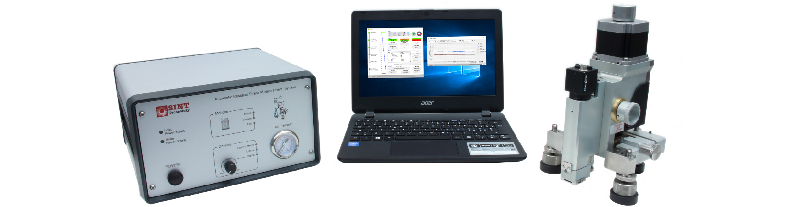

퀜칭(담금질)·템퍼링 조건에 따라 금속 내부의 잔류응력 분포는 크게 달라집니다. ASTM E837 홀드릴링법으로 조건별 잔류응력 분포를 정밀 측정·비교하여 치수 변형·균열·SCC 원인을 규명하고 최적 공정 조건을 도출합니다.
열처리 공정에서는 급격한 가열·냉각 사이클로 인해 부품 내부에 불균일한 잔류응력이 형성됩니다. 이 잔류응력이 적절히 관리되지 않으면 제품 수명·품질·안전성에 직접적인 영향을 미칩니다.
ASTM E837 홀드릴링법은 반파괴적(Semi-destructive) 방식으로, 직경 1.6~2mm의 소형 홀을 단계적으로 드릴링하면서 로제트 스트레인게이지로 응력 이완량을 측정합니다. 1µm 단위 스테핑모터 제어로 깊이별(depth profile) 잔류응력 분포를 정밀하게 파악합니다.

씨앤디테크가 수행한 실제 열처리 잔류응력 측정 사례입니다. 퀜칭 온도, 냉각 매체, 템퍼링 온도 등 공정 조건을 달리한 시편을 각각 측정하여, 조건별 잔류응력 분포 변화를 정량 비교 분석하고 고객사에 보고서를 제공하였습니다.
시편은 고객사로부터 수령 후 당사에서 측정을 진행하였습니다. 퀜칭 후 형성된 조직은 매우 단단하지만 높은 인장/압축 잔류응력을 내부에 품고 있어 치수 변형이나 크랙에 취약합니다. 템퍼링 후 응력이 얼마나 완화되었는가를 ASTM E837 홀드릴링으로 정량 확인하는 것이 핵심입니다.
SPECIMEN — 열처리 조건별 시편


MEASUREMENT — 잔류응력 측정 진행


RESULT — 전 조건 측정 완료


ANALYSIS — 잔류응력 분포 곡선

| 비교 조건 | 퀜칭 온도(800~950℃), 냉각 매체(수냉·유냉·공냉), 템퍼링 온도(150~600℃) |
|---|---|
| 측정 결과 | 깊이별 주응력(σ₁, σ₂) 분포 그래프, 방향각(β), 표면~심부 잔류응력 프로파일 |
| 활용 | 최적 공정 조건 도출, 불량 원인 규명, 품질 인증 데이터, 연구·개발 보고서 |
| 관련 기술자료 | → ASTM E837 홀드릴링 측정 원리 보기 |
아래 열처리 공정을 거친 모든 금속 부품에 적용 가능합니다. 소재 탄성계수(E)와 포아송비(ν)를 알면 대부분의 합금강에 측정이 가능합니다.
씨앤디테크는 SINT MTS3000-Restan 시스템을 활용한 열처리 부품 잔류응력 측정 용역과 장비 공급을 모두 지원합니다. 시편 사양, 측정 위치, 공정 조건을 알려주시면 최적 측정 방안을 제안드립니다.
관련 기술 자료 더 보기:
열처리 잔류응력 측정 — 공정·적용·서비스 관련 질문
시편 소재·형상·공정 조건을 알려주시면 최적 측정 방안과 비용을 안내해 드립니다. 용역 측정 · 장비 구매 · 공정 컨설팅 모두 가능합니다.